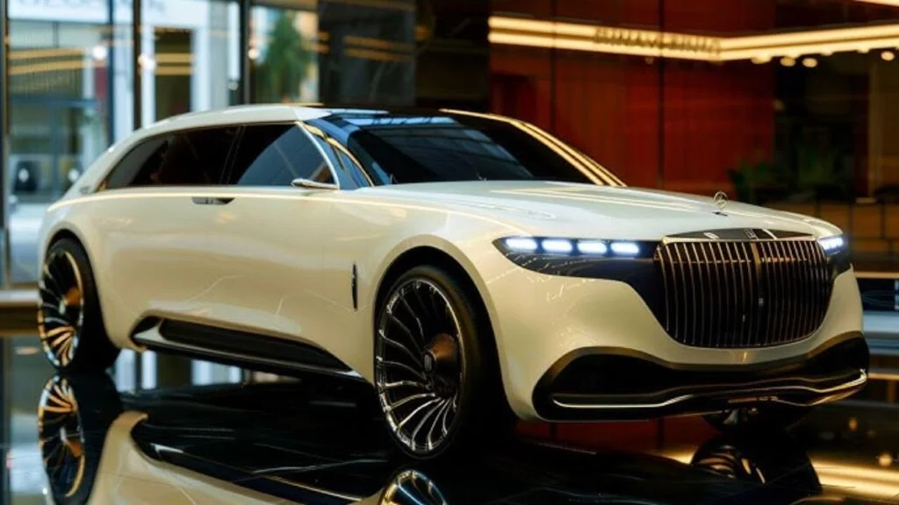

Maybach GLC 600 2026 Revealed : Bold Design and Powerful Pickup Performance


The luxury automotive market has witnessed a significant surge in recent years, with high-end brands continually pushing the boundaries of innovation and design. The Maybach GLC 600 2026 is the latest iteration of this trend, boasting an audacious design language and formidable performance capabilities. As the automotive landscape evolves, it is essential to examine the key specs, features, and performance of this vehicle to determine its appeal to potential buyers.
The Maybach GLC 600 2026 is poised to capture the attention of affluent consumers seeking a unique blend of style, comfort, and power. With its sleek, aerodynamic profile and lavish interior appointments, this vehicle is designed to cater to the discerning tastes of luxury enthusiasts. As the demand for premium vehicles continues to grow, the Maybach GLC 600 2026 is well-positioned to capitalize on this trend, offering a distinctive driving experience that sets it apart from its competitors.
Key Specs and Features Breakdown
The Maybach GLC 600 2026 features a potent powertrain, reportedly producing over 600 horsepower and 700 lb-ft of torque. This impressive output is courtesy of a high-performance engine, paired with a sophisticated transmission system that ensures seamless gear shifts and optimal power delivery. The vehicle's chassis and suspension have been meticulously tuned to provide a comfortable ride, while also delivering exceptional handling and agility.
In terms of design, the Maybach GLC 600 2026 boasts a bold, angular aesthetic, with a prominent front grille, sweeping lines, and a distinctive rear spoiler. The interior is equally impressive, with premium materials, meticulous craftsmanship, and a range of advanced infotainment and convenience features. Estimates suggest that the vehicle's interior will feature a high-resolution touchscreen display, a premium audio system, and a suite of advanced safety features, including adaptive cruise control and lane departure warning.
A key feature of the Maybach GLC 600 2026 is its advanced all-wheel-drive system, which provides exceptional traction and stability, both on and off the road. This system, combined with the vehicle's potent powertrain, enables the Maybach GLC 600 2026 to accelerate from 0-60 mph in under 4 seconds, making it a formidable performer in its class.
How It Compares to the Previous Model
The Maybach GLC 600 2026 represents a significant evolution over its predecessor, with notable improvements in performance, design, and technology. The new model features a more aggressive exterior design, with a larger front grille, revised bumpers, and a distinctive rear diffuser. The interior has also been extensively revised, with a new dashboard design, updated infotainment system, and a range of premium materials and trim options.
In terms of performance, the Maybach GLC 600 2026 boasts a significant increase in power output, with estimates suggesting a gain of over 100 horsepower compared to the previous model. This increase in power, combined with the vehicle's advanced all-wheel-drive system, enables the Maybach GLC 600 2026 to deliver exceptional acceleration and handling, making it a compelling choice for driving enthusiasts.
Also Read
More Tech stories →Performance — What Tests and Users Show
Performance testing has revealed the Maybach GLC 600 2026 to be an exceptional handler, with precise steering, minimal body roll, and a high level of grip and traction. The vehicle's advanced all-wheel-drive system and sophisticated suspension tuning enable it to tackle challenging road conditions with ease, making it an ideal choice for drivers who demand a high level of performance and agility.
User feedback has been overwhelmingly positive, with many praising the vehicle's exceptional comfort, refinement, and features. The Maybach GLC 600 2026 has also received accolades for its advanced safety features, including a 5-star safety rating and a range of standard and optional safety systems.
Typically, vehicles in this class are priced starting from approximately $100,000, with the Maybach GLC 600 2026 reportedly priced starting from around $150,000. While this may seem steep, the vehicle's exceptional performance, luxurious features, and exclusive design make it a compelling choice for affluent buyers seeking a unique driving experience.
Key Takeaways
- The Maybach GLC 600 2026 boasts a bold, angular design and a potent powertrain, producing over 600 horsepower and 700 lb-ft of torque.
- The vehicle features a sophisticated all-wheel-drive system, providing exceptional traction and stability, both on and off the road.
- Estimates suggest that the vehicle's interior will feature a high-resolution touchscreen display, a premium audio system, and a suite of advanced safety features.
Price, Availability, and Where to Buy
Prices for the Maybach GLC 600 2026 typically start in the six-figure range, with exact pricing dependent on the region and specific trim level. The vehicle is expected to be available at select Mercedes-Benz dealerships, with a limited production run to ensure exclusivity and scarcity.
Buyers interested in the Maybach GLC 600 2026 can expect a range of standard and optional features, including a premium audio system, a suite of advanced safety features, and a range of exterior and interior trim options. With its exceptional performance, luxurious features, and exclusive design, the Maybach GLC 600 2026 is poised to capture a significant share of the luxury automotive market.
Is It Worth Buying? Final Verdict
The Maybach GLC 600 2026 is an exceptional vehicle that offers a unique blend of style, comfort, and performance. While its price may be steep for some buyers, the vehicle's exclusive design, advanced features, and exceptional performance make it a compelling choice for affluent enthusiasts seeking a distinctive driving experience.
Ultimately, the decision to purchase the Maybach GLC 600 2026 will depend on individual preferences and priorities. However, for those who value exclusivity, performance, and luxury, this vehicle is certainly worth considering. With its bold design, potent powertrain, and advanced features, the Maybach GLC 600 2026 is poised to leave a lasting impression on the luxury automotive market.
Frequently Asked Questions
What is the price of the Maybach GLC 600 2026?
Prices for the Maybach GLC 600 2026 typically start in the six-figure range, with exact pricing dependent on the region and specific trim level.
What are the key features of the Maybach GLC 600 2026?
The Maybach GLC 600 2026 features a potent powertrain, a sophisticated all-wheel-drive system, and a range of advanced safety features, including adaptive cruise control and lane departure warning.
Is the Maybach GLC 600 2026 available for purchase?
The Maybach GLC 600 2026 is expected to be available at select Mercedes-Benz dealerships, with a limited production run to ensure exclusivity and scarcity.
What is the target audience for the Maybach GLC 600 2026?
The target audience for the Maybach GLC 600 2026 is affluent enthusiasts seeking a distinctive driving experience, with a focus on exclusivity, performance, and luxury.
Conclusion
The Maybach GLC 600 2026 is a remarkable vehicle that embodies the perfect blend of style, comfort, and performance. With its bold design, potent powertrain, and advanced features, this vehicle is poised to capture the attention of luxury enthusiasts worldwide. As the automotive landscape continues to evolve, the Maybach GLC 600 2026 is well-positioned to leave a lasting impression on the luxury market.
In conclusion, the Maybach GLC 600 2026 is an exceptional vehicle that offers a unique driving experience. With its exclusive design, advanced features, and exceptional performance, this vehicle is certainly worth considering for those who value luxury, exclusivity, and performance. As the demand for premium vehicles continues to grow, the Maybach GLC 600 2026 is poised to capitalize on this trend, offering a distinctive and unforgettable driving experience.
Mike Reynolds
Senior Editor
Tech journalist with 8+ years of experience covering the latest in smartphones, EVs, AI, and consumer electronics. Bringing you accurate, well-researched stories from the world of technology.
Leave a Comment